The Tcl Dev Kit Debugger provides a variety of features that help you to find and fix bugs in Tcl scripts quickly. These features include:
This section lists the platforms and Tcl versions that the Tcl Dev Kit Debugger supports. It then describes how to start the Tcl Dev Kit Debugger and provides a tour of the Tcl Dev Kit Debugger main window.
The Tcl Dev Kit Debugger can debug any Tcl/Tk script running in a Tcl version 7.6 and Tk version 4.2 or later interpreter. This includes any extensions to those interpreters that do not radically redefine any standard Tcl commands.
Important: Renaming or radically redefining any standard Tcl commands may cause the Tcl Dev Kit Debugger to fail. An example of a radical redefinition of the proc command would be to redefine it to take four arguments instead of three. In particular, avoid altering the Tcl commands listed below:
|
array |
break |
catch |
cd |
close |
concat |
continue |
|
eof |
error |
eval |
event |
exit |
expr |
fconfigure |
|
file |
fileevent |
flush |
for |
foreach |
gets |
global |
|
if |
incr |
info |
lappend |
lindex |
linsert |
list |
|
llength |
lrange |
lreplace |
lsearch |
namespace |
open |
proc |
|
puts |
pwd |
read |
regexp |
regsub |
rename |
return |
|
set |
string |
switch |
trace |
unset |
uplevel |
|
|
upvar |
variable |
vwait |
while |
To run the Tcl Dev Kit Debugger on a Windows system, select Tcl Dev Kit Debugger
from the Tcl Dev Kit program group on the Windows Start menu, or double-click the
tcldebugger.exe file (the default location is C:\Tcl\bin). Alternatively,
enter tcldebugger.exe at the command prompt. To enable
Code Profiling and Coverage,
select File|Project Settings and choose one of the options on the
Coverage & Profiling tab.
To run the Tcl Dev Kit Debugger on a Unix system, enter tcldebugger
at the shell prompt.
The main window is made up of the following components:
The menus and toolbar in the main window are used run, step through, interrupt, kill, or restart your code. You can change the appearance of the Tcl Dev Kit Debugger by toggling the display of elements in the main window from the View menu:
The function of each button is described in the following sections.
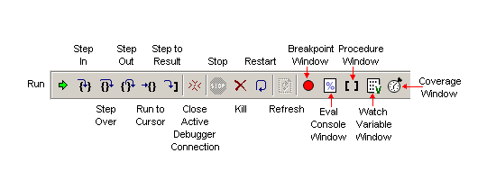When you hover the mouse over a toolbar button, a description of the functionality appears as a pop-up below the mouse pointer and on the left side of the status bar.
The Stack Frames display shows the most recent stack levels and highlights the current location in your code when the application is stopped. If you select a stack level, the Tcl Dev Kit Debugger shows the code and variable values for that stack level in the Code display and the Variable display. When the application encounters a breakpoint, the last stack frame is automatically selected and highlighted in the Stack Frame display. The call stack includes an entry for each distinct scope or body of code. It displays stack frame information in this format: stack level, Tcl command, and relevant arguments. Stack level 0 indicates the global level. Stack level 1 indicates that a procedure is invoked from level 0; stack level 2 indicates that a procedure is invoked from stack level 1, and so on.
Note: If your code is in an event loop when you click the Pause button, no code is shown in the Code display and the top level in the stack frame displays "event."
The following example shows a sample stack frame:
0 global 0 source myScriptFile 1 proc myProc arg1 arg2 arg3 2 namespace eval myNamespace 3 proc myproc3 0 uplevel 1 proc myproc3 args
In this example, the stack level is reset to 0 by the uplevel command; the uplevel command can be called explicitly in your source code or implicitly by a callback. As with any other procedure call, the namespace eval command creates a new level.
You can navigate through the application by clicking on specific stack frames, which affects both the Variable and Code displays. When you double-click any part of a stack frame, the Code display scrolls to and highlights the current command in that stack frame. For example, if you want to see the code that caused a stack frame to be created, you can double-click the frame directly above the frame in question. In addition to highlighting the current command, if the last stack frame is selected, the Tcl Dev Kit Debugger indicates the current command with a yellow Run Arrow in the Code bar. The Tcl Dev Kit Debugger also indicates the current command with a green triangular History Arrow in the Code bar. When you click a stack frame, the Variable display shows the variables in that stack frame. For example, if you want to see global variables, you can double-click any Level 0 stack frame. If you click directly on an argument in a proc stack frame, the Variable window scrolls to and highlights the selected argument.
The Variable display shows all of the existing variables in the selected stack frame. The value of each variable is updated whenever the application is stopped. The value for each array appears as an ellipsis (...). You can expand and contract the display of the array by clicking the ellipsis. When an array is expanded, each index is listed with its corresponding value.
To set a variable breakpoint, click the breakpoint margin to the left of the variable display. The application will stop whenever the variable is modified. See Manipulating Breakpoints for more information.
When a variable value exceeds the size of the display, double-click the variable to open the Data Display window, which will show the entire value. See Displaying Data for more information.
Variable Value Formats
In each of the windows where variable values are displayed (the Variable pane, the Data Display window and the Watch Variables window), you can configure the format in which the variable values are displayed. Right-click the variable in the Variable pane and select the desired format. The following formats are supported:
If the chosen format is not appropriate for the specified variable (for example, selecting Integer: As Hex for a variable that contains a non-numeric string), the format transformation will not be performed.
When specifying the format for variable values, note that the format specified in either the Variable pane or the Watch Variables window will be inherited by the Data Display window (depending on which source was used to call the Data Display window).
If the message "No variable info for this stack" appears in the Variable display, it means that the stack level that is highlighted in the Stack display is hidden. Stack levels are hidden as a result of calls to Tcl commands like vwait and uplevel. When vwait is called, it creates a new stack, and all of the non-zero levels of the old stack are hidden until the vwait call returns. When uplevel is called with the absolute level for x, all of the levels of the old stack that are greater than x are hidden until the uplevel call returns.
The Code display shows exactly one Tcl code source at a time. A code source is a file opened from the File menu, a file that has been sourced by the application, or a chunk of code dynamically created at runtime by commands such as eval. The Window menu lists all the open files, allowing you to select the file you want to view. You can also select a code source to view from the Breakpoint and Procedures windows. See Using Breakpoints and Finding Procedures.
When the application is stopped, an arrow or triangle appears in the code bar indicating the current command with highlighted text. For example, in the Tcl Dev Kit Debugger main window, the portion of the code that is highlighted is code that is about to be executed and it is also indicated by the yellow run arrow in the code bar. Code is also highlighted if it is found using the Find command. See Going to a Specified Line for information on commands that you can use to move through and search for specific portions of code.
If you see the message "No Source Code..." in the Code display, there are two possible reasons:
The status bar is located at the bottom of the Tcl Dev Kit Debugger. The section on the left displays the information about the state of the debugger session. If you hover the mouse pointer over a toolbar button, this section of the status bar will display a usage tip for the button.
Errors and warnings are indicated by the red and yellow icons in the middle of the status bar. The background color of these icons is configured in the debugger preferences.
To the right of the errors and warnings icons, an asterisk ("*") will be displayed if the current code source is uninstrumented. See About Tcl Dev Kit Instrumentation for more information.
The far right portion of the status bar displays the current file name and path and line number.
The Result display shows the result and completion code of the most recently executed Tcl command. The Result display is not a scrolling window; the Tcl Dev Kit Debugger displays only as much of the result as can fit in the Result display. You can double-click on the result to display it in the Data Display window (see Displaying Data).
Note: The performance of the Tcl Dev Kit Debugger can decrease if your application produces particularly long results (for example, reading a large file into a variable) and you have the Result display visible. If you want to increase performance in cases like this, toggle off the Result display by selecting View|Result.
You can manage multiple projects with the Tcl Dev Kit Debugger. The Tcl Dev Kit Debugger saves project information in files with the .tpj extension. Projects store a variety of information about an application including:
The file format for debugger projects changed after the first version of the Tcl Dev Kit. Version 1 .tpj files can still be opened by the debugger; changes to version 1 projects will still be stored in the version 1 format. However, information about variable value formatting cannot be stored in version 1 project files. New projects use the latest .tpj format.
By default, when the Tcl Dev Kit Debugger starts, it automatically reloads the last project you had open. You can change this behavior as described in Startup and Exit Preferences.
Note: You must have a project open to perform any debugging actions.
To create a new project:
The Tcl Dev Kit Debugger Project window will open.
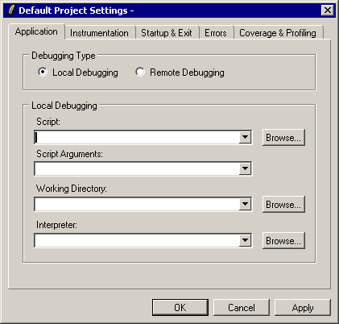Note: The Tcl Dev Kit Debugger works properly with most custom Tcl interpreters. However, if your interpreter doesn't accept as its first command-line argument a Tcl script to execute or if it doesn't pass subsequent command-line arguments to the script using the standard argc and argv Tcl variables, then you must take special steps to use your interpreter with the Tcl Dev Kit Debugger. See Using Custom Tcl Interpreters with the Tcl Dev Kit Debugger for more information.
Tip: If there are one or more interpreters you commonly use, you can change your default project settings to include them in the Interpreter drop-down list:
The interpreters you specify are now available for all new projects you create afterwards.
Once you create your new project, the Tcl Dev Kit Debugger displays the Tcl script file you specified in the Code display of the main window. The Tcl Dev Kit Debugger does not run the script until you tell it to do so, as described in Controlling your Application.
There are two ways that you can open an existing project in the Tcl Dev Kit Debugger:
If you already have a project open, the Tcl Dev Kit Debugger asks if you want to save that project.
When you open an existing project, the Tcl Dev Kit Debugger restores all of the project settings and breakpoints in effect when you saved the project. The Tcl Dev Kit Debugger also displays the Tcl script file that you were viewing when you saved the project.
To save a project, select File|Save Project. The first time you save a project, specify the file name and location for your project. The Tcl Dev Kit Debugger saves your project settings and any breakpoints and any watch variables you have set.
To save a project with a different name, select File|Save Project As.
To close a project, select File|Close Project. If you made changes, the Tcl Dev Kit Debugger asks if you want to save the project before closing it.
Closing a project closes the project file and clears all the Tcl Dev Kit Debugger displays.
To change the settings of the current project, select File|Project Settings. The Tcl Dev Kit Debugger displays the Project window. From this window you can change the script, interpreter, instrumentation, error, and coverage and profiling settings for a project as described in the sections below.
Note: Changes that you apply to your project settings while your application is running don't take effect until the next time you restart your application.
The Application tab lets you select basic application settings such as the Tcl script to debug and the Tcl interpreter to use. The contents of the Application tab depend on the Debugging Type option you select:
If you select the Local Debugging option, the Application tab appears as shown below.
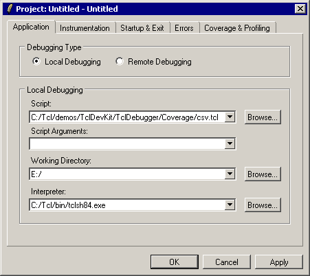You can change the following Local Debugging settings for a project:
Note: The Tcl Dev Kit Debugger works properly with most custom Tcl interpreters. However, if your interpreter doesn't accept as its first command-line argument a Tcl script to execute or if it doesn't pass subsequent command-line arguments to the script using the standard argc and argv Tcl variables, then you must take special steps to use your interpreter with the Tcl Dev Kit Debugger. See Using Custom Tcl Interpreters with the Tcl Dev Kit Debugger for more information.
If you select the Remote Debugging option, the Application tab appears as shown below.
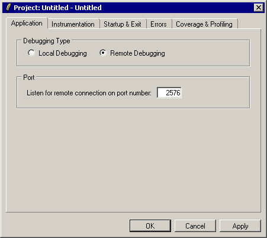The only application setting you can change when debugging remotely is the TCP port that the Tcl Dev Kit Debugger uses to communicate with the remote application. This is the port that you need to pass to debugger_init when starting your debugging session from a remote application. See Debugging Remote, Embedded, and CGI Applications for information on remote debugging.
Note: Changes that you apply to your project settings (by clicking either the OK or Apply button) while your application is running don't take effect until the next time you restart your application.
The Instrumentation tab lets you select files and classes of procedures that the Tcl Dev Kit Debugger should and should not instrument. Instrumenting a file gives the Tcl Dev Kit Debugger control over its execution, and allows you to set breakpoints, single-step through the file, and perform other debugging tasks. If a file is not instrumented, you can't perform debugging tasks while your application is executing the file (or procedures defined in that file). For more information about instrumentation, see About Tcl Dev Kit Instrumentation.
Some cases of when you would want to control which files are instrumented and which files are not include:
The top half of the Project Instrumentation dialog determines the files that the Tcl Dev Kit Debugger instruments. (By default, all files are instrumented.) The first list box identifies a set of files to instrument, and the second list box identifies a subset of exceptions that are not instrumented. File name patterns follow the "string match" pattern conventions. (See the Tcl "string manual page" in the ActiveTcl User Guide for more information on pattern syntax.) Whenever your application sources a script file, the Tcl Dev Kit Debugger compares the file name against the patterns you specify in this dialog to determine whether to instrument it. For example, setting the pattern "app*.tcl" in the first list box and "*GUI.tcl" in the second list box causes the Tcl Dev Kit Debugger to instrument files such as appMain.tcl and appStats.tcl, but not instrument a file named appGUI.tcl. The patterns will match file names in both absolute and relative paths.
To add a pattern to a list box, type the pattern in the String Match Pattern field, and then click the Add button next to the appropriate list box. To remove a pattern from the list, click the file or pattern to highlight it, then click the Remove button.
Note: If you delete all patterns in the first list box and then apply the setting (by clicking either the OK or Apply button), the Tcl Dev Kit Debugger automatically adds the pattern "*" to the first list box. If the Tcl Dev Kit Debugger didn't do this, then you could accidentally cause the Tcl Dev Kit Debugger not to instrument any files, in which case you couldn't control your application with the debugger.
The lower half of the Project Instrumentation dialog provides finer control of the instrumentation of procedures and control structures in a script file:
Note: Changes that you apply to your project settings (by clicking either the OK or Apply button) while your application is running don't take effect until the next time you restart your application.
Use the Startup & Exit tab to specify how the Tcl Dev Kit Debugger handles subprocesses.

The Errors tab lets you specify how the Tcl Dev Kit Debugger handles errors in your Tcl script:
Note: For more information on how the Tcl Dev Kit Debugger handles errors, see Error Handling.
Note: Changes that you apply to your project settings (by clicking either the OK or Apply button) while your application is running don't take effect until the next time you restart your application.
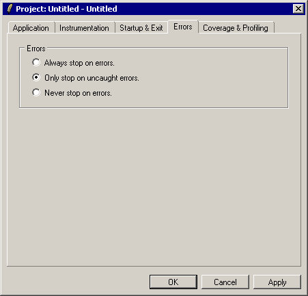The Coverage & Profiling tab lets you choose to run the Tcl Dev Kit Debugger with coverage or profiling or neither. By default, new debugger projects run with neither coverage nor profiling. To change the setting, select File|Project Settings, and click the Coverage & Profiling tab. The setting specified here will determine what type of results are displayed in the Code Coverage and Profiling dialog box (Edit|Code Coverage). Select one of the following options:
For more information see Code Profiling and Coverage.
You can change any of the default project settings so that new projects you create have those settings. Changing the default project settings doesn't affect any existing projects you might have.
For example, if you commonly use a set of packages that you don't want the Tcl Dev Kit Debugger to instrument, you could set those files in the default project settings. Then, any new project you create would pick up those instrumentation settings by default.
To set the default project settings:
Opening a file in the Tcl Dev Kit Debugger gives you the opportunity to create or check existing line-based breakpoints in the file before the file is sourced in the application. Breakpoints cause the application to stop before a line of code is executed so that you can examine the state of the application that you are debugging. See Using Breakpoints.
To open a file:
The file that you opened appears in the Tcl Dev Kit Debugger. You can view it using the scroll bars and menus.
Tip: You can open a file at any time, even when an application is already running. When you open a file, the Tcl Dev Kit Debugger reloads the file if the file has not been sourced by the running application or if no application is running. If the application is running and has sourced the file, modifications to that file cannot be seen in the Code display until that file is sourced again or the file is reopened after the application is terminated.
This section describes how to use the basic features of the Tcl Dev Kit Debugger.
Click the Run button to run your code with the Tcl Dev Kit Debugger. When the application stops, the Tcl Dev Kit Debugger indicates the line of code that it is processing with an arrow and highlights the portion of the line that it is about to execute.
Once the application is running, it stops at these events:
The Run to Cursor button lets you to create a temporary breakpoint that is automatically removed the next time the Tcl Dev Kit Debugger stops. When your application is stopped, you can move the cursor to the line of code where you want to stop, and press the Run To Cursor button.
Note: If the application stops for any reason, such as encountering another breakpoint or reaching the line containing the cursor, the temporary breakpoint is removed. The operation of the Run to Cursor feature is similar to those of line-based breakpoints. If the cursor is not set, or if it is on a line that is either empty or contains only comments or curly braces, clicking the Run to Cursor button is equivalent to clicking the Run button. The application stops just before evaluating the first command on the line regardless of where you place the cursor on a line of code.
The Tcl Dev Kit Debugger offers four ways of stepping through your scripts: Step In, Step Out, Step Over, and Step To Result. When your application is stopped, you can step from the current command, indicated by the yellow run arrow in the code bar. To use the stepping features, click the corresponding button on the toolbar when your application is stopped. See The Toolbar for a description of the buttons.
Note: If the application stops for any reason, such as encountering an error or breakpoint, after any of the Step buttons is pressed, the step is considered to be completed.
The Step In feature provides the finest granularity at which you can stop and inspect your application. Stepping in causes the application to stop just before executing the next instrumented command. Stepping in is useful for following the control flow of your application as it sources files, calls procedures, and evaluates command substitutions.
For example, if your application is stopped on the command
myProc [incr x 5]you can Step In and stop the application before it evaluates the subcommand incr x 5. You can Step In again to stop the application on the first line of code in the body of the myProc procedure.
The following list describes the rules of behavior for the Step In function:
Stepping out causes the application to stop before executing the next command after the current stack level or body of code returns. The Step Out feature is useful for backing out of code you are no longer interested in inspecting. For example: if you are stopped in the body of the myProc procedure in the following application:
1 source someFile.tcl 2 myProc [incr x 5] 3 myNextProc $x
and you would like to progress to the myNextProc $x command, you can Step Out of the myProc procedure, and then Step In the myNextProc procedure.
The following list describes the rules of behavior for the Step Out function:
Stepping over causes the application to stop just before executing the next command after the current command in your application is fully executed. The Step Over feature is useful for following the application as it progresses through a body of code at the current stack level. For example, suppose you are stopped on line 1 in the following application:
1 source someFile.tcl 2 set x 1 3 myProc [incr x 5] 4 puts $x
If you Step Over the source command, the application stops at set x 1. If you continue to click Step Over, myProc [incr x 5] becomes the new current command, followed by puts $x.
The following list describes the rules of behavior for the Step Over function:
Stepping to Result executes the current command and stops execution. After using Step to Result, the Tcl Dev Kit Debugger highlights the command just executed and displays the result and return code of that command in the Command Results display of the debugger main window.
The Step to Result feature is useful for examining the results of nested commands. For example, suppose you click Step In at line 3 in the following application:
1 source someFile.tcl 2 set x 1 3 myProc [incr x 5] 4 puts $x
If you click Step to Result, your application executes the subcommand and stops. You can then examine the result of the subcommand before continuing. By comparison, clicking Step In again at this point would execute the subcommand [incr x 5] and immediately Step In to myProc, and clicking Step Over would execute both the [incr x 5] subcommand and the call to myProc before stopping.
Clicking the Pause button causes the Tcl Dev Kit Debugger to interrupt the application while it is running. You can interrupt the application at any time; when you interrupt, an implicit breakpoint is added to the next command to be executed in the script. The application stops as it would at any other breakpoint, and you can then interact with the application.
Note: If your code is in an event loop when you click the Pause button, no code is shown in the Code display and the top level in the stack frame displays "event."
Note: If your application is executing uninstrumented Code or is in a long-running command, the Tcl Dev Kit Debugger may not be able to stop the application immediately.
Clicking the Stop button causes the Tcl Dev Kit Debugger to end the application's process. When you kill the application that you are debugging, information about its state is no longer available. You can then restart the application or launch another application.
Note: You cannot terminate remote applications using the Stop button. You can terminate a remote application by interrupting the application and typing "exit" in the Eval Console. See Manipulating Data.
Click the Restart button to terminate the current application and then restart the same application. This is equivalent to killing the application and immediately restarting it. When you restart an application, the Tcl Dev Kit Debugger automatically reloads the main script. This is useful if you have modified the script to fix a bug and want to start the application over to test the change.
If you have modified files other than the main script and wish to set or change breakpoints in those files, you can open them by selecting File|Open File rather than viewing the stale files from the Window menu.
To quit the Tcl Dev Kit Debugger, select File|Exit, or click the Close button in the Tcl Dev Kit main window.
A breakpoint causes the application to stop so that you can examine its state. You can add breakpoints in an application at any time. Using breakpoints, you can obtain information, such as variables and their values, the current call stack, and valid procedure names. Tcl Dev Kit supports two types of breakpoints: "line-based" and "variable".
Line-based breakpoints let you to specify a line of code where the application should stop. Line-based breakpoints cause the Tcl Dev Kit Debugger to stop before executing each command and subcommand on the specified line. Line-based breakpoints are persistent across runs of the application and debugger sessions.
The Tcl Dev Kit Debugger does not stop at line-based breakpoints that are set in uninstrumented lines of code, blank lines, comment lines, and lines that contain only curly braces. However, variable breakpoints can be triggered if the variable is modified in uninstrumented code. See About Tcl Dev Kit Instrumentation for information.
Variable breakpoints cause the application to stop when the variable is modified. Variable-based breakpoints are not stored in the application after you close it, or when the variable is removed, unset, or goes out of scope, for example: a local variable in a procedure goes out of scope when the procedure returns.
Note: The Variable breakpoints track the unique location where the variable is stored in memory rather than the name of the variable. You can not set a variable breakpoint until the variable exists in the application.
You can create breakpoints in the main Debugger window. To set a line-based breakpoint, click the code bar in the left margin in the Code display. The line-based breakpoint appears as a small stop sign, and causes the application to stop just before the line is executed.
To create a Variable breakpoint, click the left margin in the Variable display adjacent to the variable. The breakpoint appears as a large "V" in the Variable display. The "V" also appears in the code bar of the Code display when the variable breakpoint is triggered causing the application to stop. The variable breakpoint triggers when the value of the variable changes. You can also create and disable breakpoints from the Breakpoints submenu (Debug|Breakpoints) or in the Breakpoints window.
To delete a breakpoint, click the breakpoint in the Code or Variable display.
To display the Breakpoints window, click the "B" in the toolbar or select View|Breakpoints. The Breakpoints window displays line-based and variable breakpoints, as shown in The Breakpoints Window.
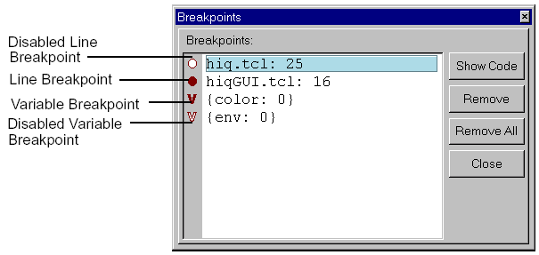The line-based breakpoints in the Breakpoints window indicate the file and line number where the breakpoint has been set. To select a breakpoint, click the line to the right of the breakpoint in the Breakpoints window to highlight it. You can delete, disable, and enable breakpoints:
The disabled breakpoint is shown as a hollow stop sign for a line-based breakpoint or hollow "V" for a variable-based breakpoint.
Disabling and enabling breakpoints can be helpful when you want to keep all of your breakpoints but may not want to use all of them at the same time.
Note: You can select multiple breakpoints to be disabled or enabled by clicking the breakpoints while pressing the Ctrl key.
You can perform the following actions on a selected breakpoint:
Clicking this button causes the Tcl Dev Kit Debugger to display the code containing the corresponding line in the Code display.
You can click the Remove All button to remove all of the breakpoints.
The information for a variable breakpoint in the Breakpoints window appears in the form of two sets. The first set contains the variable name followed by the absolute stack level at which the variable breakpoint was created. The second set contains information regarding the last time the variable breakpoint was triggered. If the second set is empty, the variable breakpoint has never been triggered. Otherwise, the second set contains the name and stack level of the variable that triggered the variable breakpoint. In most cases, the second set will not differ from the first set. However, when a variable is aliased by the global and upvar commands, any instance of that variable can trigger the variable breakpoint. The second set is helpful when you have an aliasing bug in your code.
The following is an example of an aliased variable a whose variable breakpoint gets triggered by a variable named x:
1 proc foo {} {
2 upvar #0 a x
3 set x 52
4 }
5 set a 50
6 puts "global var a is set"
7 set a 51
8 foo
If you stop this application on line 6, you can create a variable breakpoint for the global variable a. If you open the Breakpoints window, you will see the following:
{a: 0} {: }
If you continue to run the application, the variable breakpoint is triggered on line 7. The following appears in the Breakpoints window:
{a: 0} {a: 0}
If you continue to run the application again, the variable breakpoint is triggered once more on line 3. The following appears in the Breakpoints window:
{a: 0} {x: 1}
The Tcl Dev Kit Debugger can debug subprocesses (and threads) that are "spawned" from a debugging session. These subprocesses are launched by modifying your script and and setting "spawnpoints" at appropriate positions within the script. Spawnpoints are set similarly to breakpoints. If spawnpoints have been set, green arrows are displayed in the margin at the left of the Tcl Dev Kit Debugger's main window.
Set and remove spawnpoints by right-clicking in the left margin in the Tcl Dev Kit Debugger's main window. Alternatively, select Debug|Breakpoints, and choose one of the spawnpoints options:
thread::create, spawn and exec commands.When you run the debugger with spawnpoints set, a new Code display tab is launched for each spawned subprocess/thread. Once a subprocess has been spawned, you can debug it as you would a regular session in the Tcl Dev Kit Debugger. To close the connection between the debugger and a subprocess, select Debug|Stop or click the Close active debugger connection button on the toolbar.
Note: It is not possible to have multiple projects open in the debugger, with separate debugging sessions for each. The new sessions can only be subprocesses of the main session. Furthermore, data is not shared between sessions. Each session has its own breakpoints and file information. Only breakpoints and spawnpoints in the main session are saved and restored.
If you want to spawn a new session, you must modify the main script in a
debugger project by adding the following proc command, along with
a spawn command for each subprocess that you want to debug.
Spawnpoints (indicated by green arrows) are then set at these lines. So, in the
example shown below, the spawnpoints are set on the lines containing the spawn
commands for subprocess1.tcl and subprocess2.tcl.
proc spawn {cmd args} {
return [eval [linsert $args 0 \
exec [info nameofexecutable] $cmd]]
}
puts "Running the profiled multipliers in parallel"
spawn [file join [file dirname [info script]] subprocess1.tcl]
spawn [file join [file dirname [info script]] subprocess2.tcl]
puts "Launch complete"
Note that the command name, signature, and functionality have to match the
definition of spawn.pdx, which is wrapped in tcldebugger.exe.
Use the Virtual Filesystem Explorer to view the
contents of this file. The virtual path is /tcldebugger.exe/debugger/.
Although the spawn procedure described above is the simplest and most
effective way to debug a subprocess, there is an alternative method that makes
it possible to invoke subprocesses in remote locations. This method requires that
you create a main script containing the exec command and modify the
script that you want to debug. Set a spawnpoint in the Tcl Dev Kit Debugger's
main window at the line containing the exec command.
Create a main script similar to the following:
puts "launch" exec C:\Tcl\bin\<TclInterpreter$gt; C:\<DirectoryName>script.tcl puts "OK"
modify the script to be debugged similarly to the following:
package_require tcldebugger_attach
if {[info exists ::env(DEBUG_INFO)]} {
foreach {host port cdata} $::env(DEBUG_INFO) break
debugger_init $host $port $cdata
}
debugger_eval {
<your code>
}
The Tcl Dev Kit Debugger provides utilities that help you navigate to specific portions of the code that you are debugging, including the Procedures window, the Goto command, the Find command, and the Window menu.
The Tcl Dev Kit Debugger highlights the specified line.
Tip - You can also use the Goto What drop-down list to move up or move down the lines in your code from the insertion cursor. Select Move Up Lines or Move Down Lines and type the number of lines that you want to move.
The Tcl Dev Kit Debugger highlights the code that matches the string that you typed. If the string is not found, the Code Display does not change. You can find subsequent matching strings by clicking the Find Next button or pressing the <F3> key.
You can use the Procedures window to view the list of procedures that have been defined in your application. To open the Procedures window, click the "P" button on the toolbar in the main Tcl Dev Kit Debugger window, or select View|Procedures.
In order for procedures associated with the current application to be displayed in the Procedures window, the Tcl Dev Kit Debugger must be active. To view procedures, set a breakpoint, and then run the debugger.
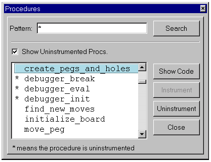To narrow down the list, you can type a pattern in the text box and click Search. The default pattern is an asterisk ("*"), which lists all of the defined procedures in the application. Pattern strings can be one or more characters and follow the search conventions that are used with the Tcl glob command. The matches for the string are shown in the display area of the Procedures window. This is useful for finding specific procedures if you have large applications with many procedures. For example, if you type "tcl*" in the text box of the Procedures window, tclLog, tclMacPkgSearch, and all other procedures beginning with "tcl" are displayed in the display area of the Procedures window.
You can display both instrumented and uninstrumented procedures by selecting Show Uninstrumented Procs. Uninstrumented procedures are indicated by asterisks in the display area of the Procedures window. For more information, see About Tcl Dev Kit Instrumentation.
When you select a procedure from the list, you can perform any of the following actions on it:
The Tcl Dev Kit Debugger detects errors according to the criteria described in Error Handling. Using the Syntax errors dialog box, you can view a summary list of errors and warnings that have been encountered up to the current debugging point.
Note that errors and warnings will not necessarily prevent users from running the script. Errors such as false positives incorrectly detected by the Tcl Dev Kit Checker will have no effect at run-time, whereas runtime or instrumentation errors may prevent the application from running.
To open the Syntax errors dialog, select View|Syntax errors, or press Alt + F5.
Lines containing syntax errors and warnings are colored in the code display window according to the configuration of the debugger preferences.
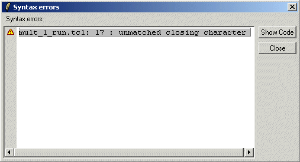To display the code causing a syntax error in the code display, select the error and click Show Code.
Select the Window menu to display all of the files that are open in the Tcl Dev Kit Debugger.
The Tcl Dev Kit Debugger provides several windows in which you can display and monitor specific aspects of the application that you are debugging. These include the Watch Variable window, and the Data Display window. For information on the Breakpoints window, see Viewing Breakpoints in the Breakpoints Window.
To open the Watch Variables window, click the "W" button on the toolbar. Alternatively, select View|Watch Variables.
The Watch Variables window displays variable names and values at the stack level that is selected in the Stack Frames display. The values in the Watch Variables window are updated each time the application stops, and also each time you select a new stack level in the Stack Frames display in the main window. If a variable name or value is not defined at the selected stack level, then "<No Value>" appears instead of a value.
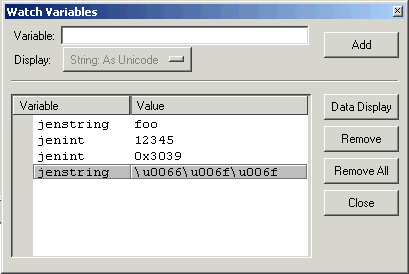To add a variable name to the Watch Variables window:
The variable name and the current value of the variable are displayed in the variable list.
To remove a specific variable, click the line, then click the Remove button. To remove all variables, click the Remove All button.
To invoke the Data Display window, which displays the full unabbreviated value of a variable, click the desired variable then click the Data Display button. Alternatively, double-click the desired variable.
The Watch Variables window is useful for observing variables in different stack levels that have the same name. For example, suppose the following script is stopped just before executing line 10:
1 proc bar {x} {
2 puts $x
3 }
4
5 proc foo {y} {
6 baz [expr {$y + 3}]
7 }
8
9 set x 2
10 foo $x
The stack display is shown below:
0 global 0 source sample.tcl 1 proc foo y 2 proc bar x
If you are watching the variable named x, you will see the value change as you select different stack levels. At level 2, x has the value 5. At level 1, x is not defined, so "<No Value>" is displayed. At level 0, x has the value 2.
Variable Value Formats
In each of the windows where variable values are displayed (the Variable pane, the Data Display window and the Watch Variables window), you can configure the format in which the variable values are displayed. The following formats are supported:
If the chosen format is not appropriate for the specified variable (for example, selecting Integer: As Hex for a variable that contains a non-numeric string), the format transformation will not be performed.
When you add a variable to the Watch Variables window, select the desired display format from the drop-down list, then press Add. If "No Transformation" is selected, the variable value format will not be transformed.
Once a variable has been added to the list, you cannot change the display format. However, you can add the same variable more than once, specifying a different format each time. If you specify the same variable and variable format twice, the combination will only be displayed once.
When you add an array variable to the Watch Variables window, you cannot specify the variable value format for individual elements. (The format will be inherited from the setting in the Variable pane.) To transform individual elements, add the array variable with the specific element, rather than the entire array variable. For example, if you specify the array "foo", elements in the array will be displayed in the same format as in the Variable pane. However, if you specify "foo(bar)", you may specify the variable value format for the "bar" element in the "foo" array.
The Data Display is used to see the full unabbreviated value of a variable, which can be helpful if you are looking at long strings.
To open the Data Display window, double-click a variable in the Variable display in the main window, or double-click a variable in the Watch Variable window. Alternatively, select View|Data Display.
By default, the variable that was highlighted when the Data Display window was invoked will be displayed. To display a different variable, double-click the desired variable in the Variable pane or the Watch Variables window. Alternatively, type the variable name in the Data Display window and click Display.
The variable is linked to the stack level that is highlighted in the Stack display at the time the variable is entered in the Data Display window. Once the variable is entered, changing the stack level in the Stack display will not affect the value of the variable. The value that is displayed for the variable is updated each time the application stops. If "<No Value>" appears, it means that either the variable was unset or the stack level attached to the variable has returned. Like variable breakpoints, a variable in the Data Display is associated with a location in memory. Once "<No Value>" appears, the previous memory location is no longer reserved for that particular variable, so "<No Value>" for the variable will reappear.
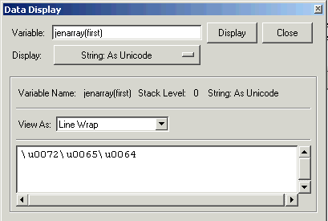Variable Value Formats
In each of the windows where variable values are displayed (the Variable pane, the Data Display window and the Watch Variables window), you can configure the format in which the variable values are displayed. Select the desired format from the Display drop-down list. The following formats are supported:
If the chosen format is not appropriate for the specified variable (for example, selecting Integer: As Hex for a variable that contains a non-numeric string), the format transformation will not be performed.
The variable value format is inherited from either the Variable pane or the Watch Variables window, depending on where the Data Display window was invoked. To specify a different format, select the desired format from the Display drop-down list.
View As Menu
Use the drop-down View As menu to select the format for the variables. The Tcl Dev Kit Debugger attempts to match the display to the variable type. For example, if the variable is scalar, it will display with line wraps, and if it is an array, it will display as an array. You can view the variable with the following formats:
Note: Ordered lists can be displayed as arrays.
To open the Eval console, click the "E" button on the toolbar, or select View|Eval Console.
The Eval console is used to pass commands to an application or to call procedures. Any time that the application is paused (either at a breakpoint or as a result of a debugger command like "Step Over" or "Step Out") you may enter commands in the Eval console to be evaluated by the application.
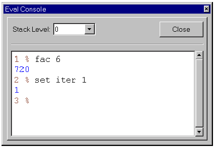Use the Stack Level drop-down list to select the stack in which you want to evaluate commands. (The deepest stack level is selected by default when the Eval Console windows is invoked.) You may also change the current stack level by using the keyboard shortcuts Ctrl + Plus (to move to the next higher stack level) and Ctrl + Minus (to move to the next lower stack level). The stack levels correspond to the numerical levels displayed in the Stack Frames window.
The Eval Console maintains a command history. To invoke a command previously entered in the Eval Console, use the Up Arrow key (or Ctrl + p) to scroll through previous commands. Use the Down Arrow key (or Ctrl + n) to scroll through commands subsequent to the current command.
The Tcl Dev Kit Debugger detects all errors in the application including runtime and parsing errors.
A parsing error is an error that is caused by code that is not syntactically valid. An example of a parsing error is a script that is missing a close brace. The Tcl Dev Kit Debugger detects parsing errors during instrumentation, whenever a file is sourced or a procedure is created dynamically by the application.
When a parsing error occurs, the Tcl Dev Kit Debugger cannot understand the script's control flow following the error, and cannot continue instrumenting the code. The Tcl Dev Kit Debugger displays a dialog box in which you choose to either quit the application or continue the application with the partially instrumented script. If you choose to continue debugging the partially instrumented script, the same error appears as a runtime error if the code is executed. See About Tcl Dev Kit Instrumentation for details on the implications of continuing despite the parsing error.
An example of a runtime error is an attempt to read a non-existent variable. The Tcl Dev Kit Debugger detects all runtime errors, including both those caught and those not caught by a Tcl script. How the Tcl Dev Kit Debugger handles runtime errors depends on the Error settings that you specify for your project. See Changing Project Error Settings for more information on specifying your project Error settings. If you have set:
When the Tcl Dev Kit Debugger detects a runtime error in accordance with the rules above, it stops execution of your application and displays a dialog box such as the one shown in the Tcl Dev Kit Debugger Tcl Error Dialog.
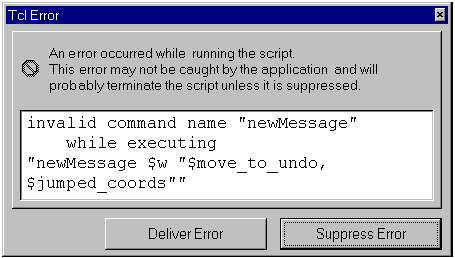You have the choice of either delivering the error or suppressing the error:
While your application is stopped, you can examine your Tcl script, view and change variable values, set breakpoints, and use all the other features of the Tcl Dev Kit Debugger. If you single-step or run your application without first selecting whether to deliver or suppress the error, the Tcl Dev Kit Debugger delivers the error if your application catches it and suppresses it otherwise.
Use the Syntax errors dialog to view a list of all the errors contained in the current program. Also, lines containing syntax errors and warnings are colored in the code display window according to the configuration of the debugger preferences. If you hover the mouse pointer over a line containing a syntax error or warning, the text of the error will be displayed in the Status Bar in the bottom left corner.
The Eval Console displays output written
to STDOUT or STDERR. When a program calls for input via a [gets]
or [read stdin] statement, the Eval Console will display an
(STDIN) % prompt where data for STDIN can be entered. (Each
subsequent [gets] or [read stdin] statement will
generate a new prompt, and will require new input.) The code line which called
for input will be indicated in the code display window.
The Eval Console window is opened automatically when STDOUT or STDERR is generated, or when STDIN input is required.
The Tcl Dev Kit Debugger includes a tool for analyzing code coverage. Coverage and Profiling settings are specified on the Coverage & Profiling tab in the Project dialog box (File|Project Settings). For more about Coverage and Profiling options, see Changing Project Coverage and Profiling Settings.
Code Coverage and Profiling has three components:
Coverage information is collected as the debugger runs. The code displayed in the debugger is updated as each line is processed. If you have configured Coverage and Profiling to "Highlight Uncovered Code...", each line that has not been processed will highlighted in green (the default color). If you have configured Coverage and Profiling to "Highlight Covered Code...", each line that has been processed will be displayed in a shade of orange (the default color); lines that have been processed a number of times will be highlighted with a darker color. The more times a line has been processed, the darker the color.
Select View|Code Coverage, or click the "Code Coverage" button on the toolbar, to open the Code Coverage and Profiling dialog. If you have set breakpoints in the file, coverage or profiling coloration will be updated in the code display pane as the debugger stops at each breakpoint. The pane that displays the source code will be colored to indicate either "covered" (code lines that have been processed) or "uncovered" (code lines that have not been processed) based on the selection in the Code Coverage and Profiling dialog.
The coverage function stores the coverage and profiling analysis from the last time the debugger was run in the current session. Unless you manually clear the coverage information (using the Clear All Coverage button in the Code Coverage and Profiling dialog), you will be asked if you wish to save the coverage information from the last debugger run.
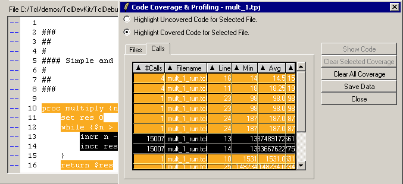Highlight Uncovered Code for Selected File Each line of code in the Code Display that has not been processed will be displayed with a green background.
Highlight Covered Code for Selected File Each line of code in the Code Display that has been processed will be displayed in orange. Lines that have been processed multiple times will be highlighted with a darker shade. The darker the shade, the more times the line has been processed.
Show Code When a file is selected on the Files tab, or a call selected on the Calls tab, click the Show Code button to shift the code display in the debugger to the desired file or call.
Clear Selected Coverage When multiple files are displayed on the Files tab, you can clear the coverage display for one or more files, rather than clearing the display for all files. Select the file for which you wish to clear coverage, then click Clear Selected Coverage. Coverage will be cleared regardless of whether covered or uncovered code has been selected for display.
Clear All Coverage To clear all coverage information, click Clear All Coverage. Coverage will be cleared regardless of whether covered or uncovered code has been selected for display.
Save Data To export coverage information for the project, click Save Data. This will create a file in CSV (comma separated values) format in the specified directory. The file contains the following columns:
For more information about Code Coverage and Profiling, see the Coverage Analysis Tutorial and the Hotspot Analysis Tutorial.
You can specify preferences to customize the Tcl Dev Kit Debugger. To modify Preferences, select Edit|Preferences. Click the tabs to select your preferences for Appearance, Windows, Instrumentation, and Startup and Exit, and Browser preferences.
You can choose the following Appearance preferences:
Tip: The Tcl Dev Kit Debugger attempts to optimize your font and size preferences. If you type a font that is unavailable, the Tcl Dev Kit Debugger finds the most similar font on your computer and substitutes it. ActiveState recommends that you only use fixed-width fonts.
Note: Small font sizes can cause misalignment of the symbols in the Code Bar and their corresponding lines of code. If you experience problems, increase the font size.
After changing the Appearance tab settings, click the OK button to save your choices and close the Preferences window, the Cancel button to cancel your choices and close the Preferences window, or the Apply button to apply your choices and keep the Preferences window open.
You can modify the following Windows preferences:
After changing the Windows tab settings, click the OK button to save your choices and close the Preferences window, the Cancel button to cancel your choices and close the Preferences window, or the Apply button to apply your choices and keep the Preferences window open.
The Startup preference controls the Tcl Dev Kit Debugger's behavior when you start the debugger:
The Exit preferences control the Tcl Dev Kit Debugger's behavior when you quit the debugger:
After changing the Startup & Exit tab settings, click the OK button to save your choices and close the Preferences window, the Cancel button to cancel your choices and close the Preferences window, or the Apply button to apply your choices and keep the Preferences window open.
The Tcl Dev Kit Debugger uses a Web browser to display the ActiveState Web site when you click on the ActiveState URL in the About Tcl Dev Kit Debugger window.
You can select one of the following choices for your Web browser with Tcl Dev Kit:
After changing the Browser tab settings, click the OK button to save your choices and close the Preferences window, the Cancel button to cancel your choices and close the Preferences window, or the Apply button to apply your choices and keep the Preferences window open.
When you begin running an application, the Tcl Dev Kit Debugger transparently processes the specified Tcl/Tk script. It modifies the code to enable communication between the Tcl Dev Kit Debugger and the script. This process is known as instrumentation. The Tcl Dev Kit Debugger launches the application with the instrumented script in place of the original script. The instrumentation was designed to be as unobtrusive as possible. However, you can expect some slowdown in applications as a result of the instrumentation.
You can specify which procedures to instrument in the Procedures window; see Finding Procedures. You can also specify files and classes of procedures to leave uninstrumented; see Changing Project Instrumentation Settings. In addition to the files and procedures that you tell the Tcl Dev Kit Debugger not to instrument, there are also some instances of dynamically created code that the Tcl Dev Kit Debugger cannot instrument. These include "if" statements with computed bodies and callbacks from Tcl commands. When the application is executing uninstrumented code, it cannot communicate with the Tcl Dev Kit Debugger. If you want to interrupt or to add a breakpoint to the script while uninstrumented code is executing, the application cannot respond until it reaches the next instrumented statement.
The Tcl Dev Kit Debugger indicates that a procedure or file is uninstrumented by listing the procedure or file name preceded by an asterisk ("*") in the Procedures window, Windows menu, and the Code display status bar.
In some cases, the Tcl Dev Kit Debugger can't directly launch your application. Some examples where this is often true include CGI applications, embedded applications, and applications that must run on a system other than your debugging system.
For applications such as these, the Tcl Dev Kit Debugger supports remote debugging. In remote debugging sessions, your application starts as it normally would and then establishes a special connection to the Tcl Dev Kit Debugger. You can then use the Tcl Dev Kit Debugger to perform all debugging tasks as you would in a local debugging session.
To debug a remote application, you must perform the following steps:
The following sections describe how to perform these tasks.
For your application to establish and maintain communication with the Tcl Dev Kit Debugger, you must modify your application to use the tcldebugger_attach package, which is contained in the lib subdirectory of your Tcl Dev Kit installation. Use the following package command:
package require tcldebugger_attach
Your script must call the debugger_init procedure and, optionally, the debugger_eval and debugger_break procedures. You can modify your script in one of two ways: create a new "wrapper" script that sources your existing script, or modify your existing script.
The following procedures are available for remote debugging:
For more information about these commands see the Tcl Dev Kit Command-Line Reference.
If you decide to create a new script, that script should load the tcldebugger_attach package, and then source the file that was originally the main script of your application. This new script becomes the main script of your application. Your new main script may look like the following:
# Source the tcldebugger_attach package package require tcldebugger_attach # Assume the variables $host and $port respectively contain # the name of the machine on which the Tcl Dev Kit Debugger is # running and the port on which it is listening. debugger_init $host $port # Assume $myOriginalMainScript contains the path of your # original script. source $myOriginalMainScript
If you decide to modify your existing script, you must change it to load the "tcldebugger_attach" package and call the debugger_init procedure. Once debugger_init is called, other files sourced by the script will automatically be instrumented. If you want the Tcl Dev Kit Debugger to instrument code in the file that calls debugger_init, the code that you wish to instrument must be encapsulated in a call to the debugger_eval procedure. See About Tcl Dev Kit Instrumentation for more details on instrumentation.
Your new main script may look like the following:
# Source the tcldebugger_attach package
package require tcldebugger_attach
# Assume the variables $host and $port respectively contain
# the name of the machine on which the Tcl Dev Kit Debugger is
# running and the port on which it is listening.
debugger_init $host $port
debugger_eval {
# ... your code goes here ...
}
Before you begin debugging a remote application, you must create a remote debugging project in the Tcl Dev Kit Debugger. This causes the Tcl Dev Kit Debugger to listen on a specified port for your application to establish a connection.
To create a remote debugging project:
After you have modified your application for remote debugging and created a remote debugging project in the Tcl Dev Kit Debugger, you can launch your remote application for debugging.
Simply run your application as you would normally. Your application stops just before it evaluates the first command in the debugger_eval script, or the first time it sources a file, whichever comes first. The Tcl Dev Kit Debugger displays your script in its main window, and you can begin debugging as you would a local application.
You can view the connection status while debugging by selecting View|Connection Status. The status displays in The Connection Status window.
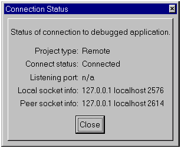The Connection Status Window displays the following information:
The Tcl Dev Kit Debugger works properly with most custom Tcl interpreters. However, to properly instrument and execute your application, the Tcl Dev Kit Debugger must be able to pass debugging information to your Tcl script as command-line arguments. Therefore, if your interpreter doesn't accept as its first command-line argument a Tcl script to execute or if it doesn't pass subsequent command-line arguments to the script using the standard argc and argv Tcl variables, then you must take special steps to use your interpreter with the Tcl Dev Kit Debugger.
First, you must create a special Tcl wrapper script. The listing below shows a sample implementation of such a script for Unix systems. To use it, you must either change the line setting the cmdPrefix variable, replacing "tclsh" with whatever command you need to run your Tcl interpreter, or you must set your TCLDEBUGGER_TCLSH environment variable to contain that command.
#!/bin/sh
#\
exec tclsh $0 ${1+"$@"}
if {$argc < 1} {
puts stderr "wrong # args: location of appLaunch.tcl is required"
}
if {[info exists env(TCLDEBUGGER_TCLSH)]} {
set cmdPrefix "$env(TCLDEBUGGER_TCLSH)"
} else {
set cmdPrefix "tclsh"
}
set customScriptName "/tmp/launchScript.[pid]"
set appLaunchPath [lindex $argv 0]
set f [open $customScriptName w]
puts $f "
file delete -force $customScriptName
set argv0 [list $appLaunchPath]
set argv [list [lrange $argv 1 end]]
set argc \[llength \$argv\]
source \$argv0
"
close $f
catch {
eval exec $cmdPrefix [list $customScriptName 2>@stderr >@stdout <@stdin]
}
Then, to debug your application select the wrapper script as your interpreter (that is, type the path and name of the wrapper script in the Interpreter field of the Project Application Settings Tab). Specify the script and any script arguments for your application in the Project Application Settings Tab as normal.
For an example of wrapping a Tcl script on the Windows platform, see DOS BAT Magic on The Tcl'ers Wiki.